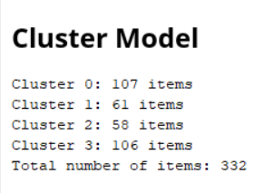
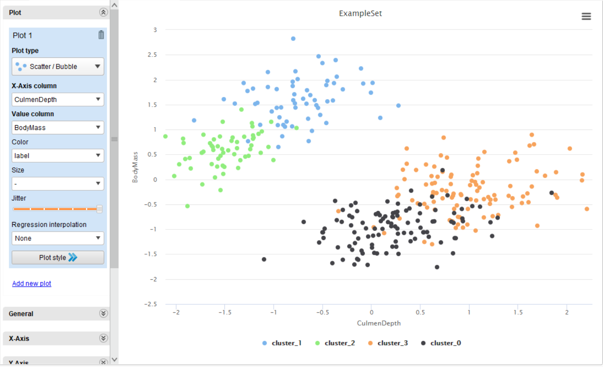

Implementasi K-Means
Note
Untuk session ini, kita akan menggunakan dataset berikut: Penguin
Source: https://www.kaggle.com/code/parulpandey/penguin-dataset-the-new-iris
Berbeda dengan kNN, K-Means tidak memerlukan data train dan test. Jadi kita tidak perlu split data lagi.
Lakukan pre-processing sesuai dengan Session 09.
Filter Examples (filter tidak ada data yang kosong)
Filter Examples (pastikan FlipperLength berada di antara 100 dan 250, inclusive). Filter Example ini bisa digabungkan dengan proses a.
Map (untuk Genders, ubah MALE menjadi 1 dan FEMALE menjadi 2)
Parse Numbers (untuk semua kolom)
Normalize (untuk semua kolom)
Gunakan node Multiply untuk membuat 1 dataset yang sama dapat digunakan oleh banyak proses (akan digunakan di part Variable Analysis)
Dari Multiply, hubungkan denga node K-Means. Pada node K-Means, atur parameter berikut:
Number of Clusters: 4
Max Runs: 4
Nyalakan Add Cluster Attribute
Nyalakan Add as label
Untuk measure types dan jenis distance, silahkan atur sesuai kebutuhan (silahkan bereksperimentasi)
Kemudian, hubungkan kedua node “clu” ke dalam output.
Jika sudah selesai, tekan tombol Run untuk melihat hasilnya.
{kind=link}
Analisa Result
Setelah proses selesai, kita akan mendapatkan hasil berupa cluster model.
{kind=link}
Di sini, kita bisa lihat, ada berapa data yang dikelompokkan ke dalam cluster 0, 1, 2, dan 3 (karena ada total 4 cluster)
Jika kita ingin melihat visualisasi dalam bentuk grafik, kita bisa membuka tab Example Set. Lalu di tab sebelah kiri, tekan tab “Visualization”. Di sana, kita bisa melihat visualisasi dari data yang sudah kita kelompokkan.
{kind=link}
Di sini kita dapat lihat bahwa dalam clustering, data yang kita miliki sudah terbagi ke dalam 4 cluster yang berbeda, dan setiap data di suatu cluster tersebut memiliki posisi yang berdekatan satu sama lainnya.